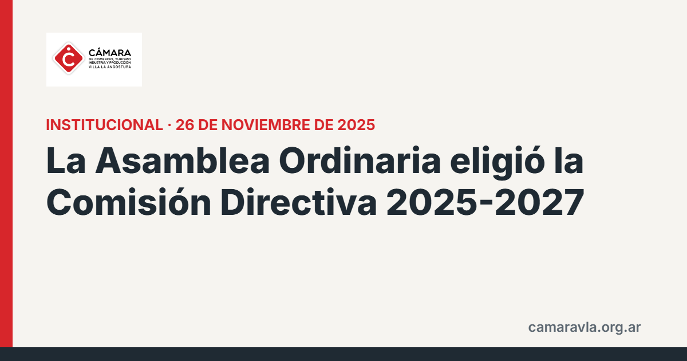

Institucional · 26 de noviembre de 2025
La Asamblea Ordinaria eligió la Comisión Directiva 2025-2027
José Alberto Suárez fue elegido presidente. El mandato de la nueva Comisión Directiva y del órgano de fiscalización se extiende hasta el 26 de noviembre de 2027.

La Asamblea Ordinaria del 26 de noviembre de 2025 designó a las nuevas autoridades de la Cámara, según constancia de la Inspección Provincial de Personas Jurídicas de Neuquén N° 06360/2025.
Fuente: La Angostura Digital, 28/11/2025
Compartí esta nota: https://camaravla.org.ar/noticias/2025-11-asamblea-nuevas-autoridades